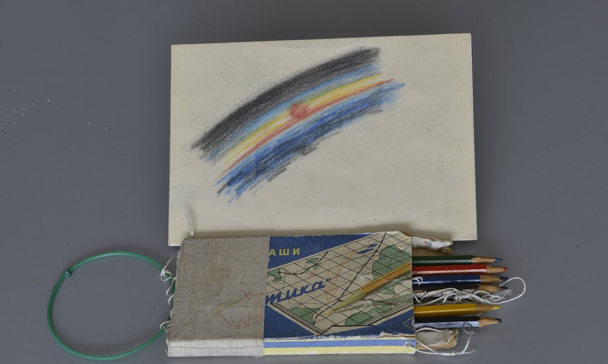

Age: 34
Located: Brooklyn, NY
School:
Attended MIT for both his undergrad and masters. Both degrees came from the department of aeronautics and astronautics with a minor in Architecture and Visual Art.
Did three year residency after working independently for two years. Did two years as a regular resident and one year as the “Resident Researcher in Art/Science” at Rijksakademie van beeldende kunsten. About his time there he said “The Rijksakademie is not a degree-granting institution but was a crucial part of my education and immersion in art.”
“I am very interested in producing the undocumentable. I’m not really sure what that means or looks like, but that’s why the possibility holds my interest. Again, I’m not sure if the undocumentable can truly occupy a place in our culture, but I think I’d like to live in a society that could fully value the undocumentable.”
Influences:

Astronaut Aleksei Leonov who brought colored pencils to space with him and drew a sketch of the horizon from space.
Oskar Schlemmer’s statement, "a further emblem of our time is mechanization, the inexorable process which now lays claim to every sphere of life and art. Everything which can be mechanized is mechanized. The result: our recognition of that which cannot be mechanized."
James Turrell, Robert Irwin, Joseph Beuys (mainly his writings), Dan Graham, Krzysztof Wodiczko, William Wegman’s early videos, Mitch Hedberg, Steven Wright, Nancy Holt, Urs Fischer, John Baldessari, Harun Farocki, Robert Barry, Larry Walters, Tino Sehgal, Jonathan Safran Foer, Miranda July...